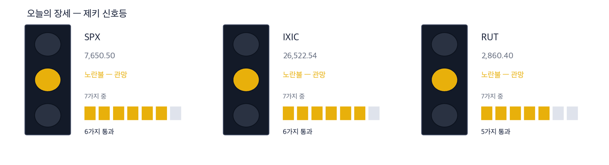
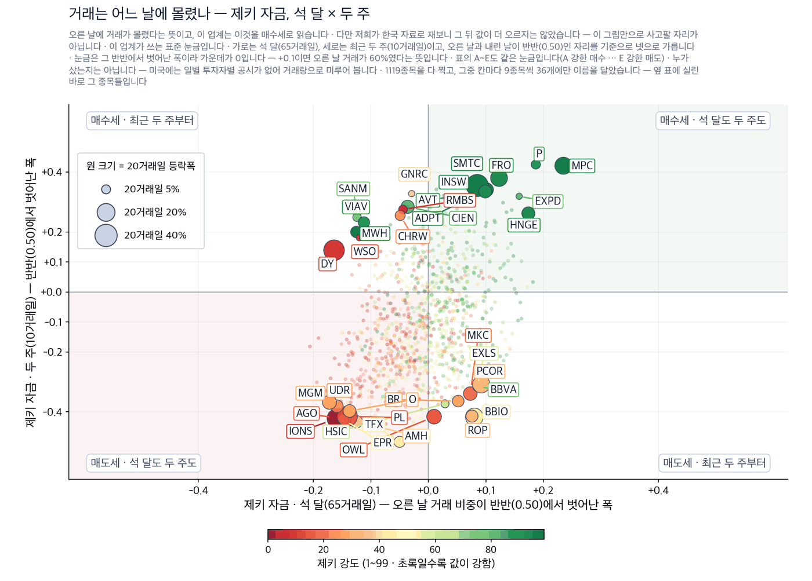
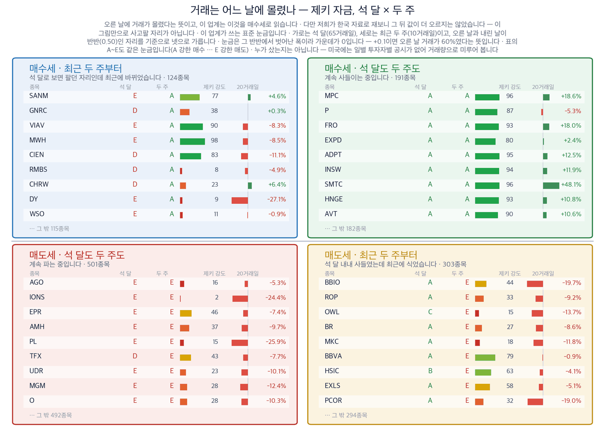

S&P 500 7,650.50 (+0.17%) | 나스닥 26,522.54 (+0.39%) | 러셀 2000 2,860.40 (-0.50%) | 미 국채 10년물 5.00% | 제키 신호등 노란불 |

| 켜진 등 | 오늘의 국면입니다. 초록은 매수 우위, 노랑은 관망, 빨강은 매수 자제입니다. |
| 채워진 칸 | 7가지 조건 중 몇 개를 통과했는지입니다. 칸이 많이 찰수록 시장 구조가 튼튼합니다. |
| 칸이 다 찼는데 노랑·빨강이면 | 다른 이유로 한 단계 낮춘 것입니다. 그림 아래에 그 이유를 적었습니다. |
| 날짜 | 무엇을 보는가 | 넘으면 어떻게 되는가 |
|---|---|---|
| 9월 21일(월) 개장 30분 | S&P 500이 9월 18일 종가 7,650.50을 지키는지 | 지키지 못하면 다음 자리는 50일 평균 7,617.24입니다 |
| 9월 21일(월) 마감 | 50일 평균 위 종목이 360개보다 늘어나는지 | 늘어나면 상승이 지수 몇 곳만의 일이 아니게 됩니다 |
| 9월 24일(목) | 트럼프 대통령과 시진핑 주석의 워싱턴 회담 | 희토류가 의제에 오르면 반도체 소재 값이 먼저 움직입니다 |
| 9월 24일(목) | 8월 신규주택 판매 | 금리를 올린 뒤 처음 나오는 주택 지표입니다 |
| 9월 25일(금) | 9월 미시간대 소비자심리 확정치 | 물가 기대가 오르면 국채 금리가 다시 올라갑니다 |
종가 237.65달러 · 9월 18일 -3.28% · 한 주 +14.95% · 20거래일 +24.9% · 석 달 +38.8% · 제키 강도 95 · 제키 자금 석 달 B · 두 주 B · 52주 최고가 대비 -3.3% 누가 클라우드 보안 회사가 · 무엇을 기업의 단말과 서버를 지키는 구독 서비스를 · 언제 9월 18일 종가까지 · 어디서 미국 기업의 전산망에서 · 왜 인공지능이 스스로 침입에 성공한 사례가 지면에 공개됐기 때문에 · 어떻게 구독 금액이 올라가면서 다음 분기 매출로 들어옵니다 9월 14일 하루에 13.85% 올랐습니다. 그 뒤 나흘 중 이틀을 올랐고 9월 18일에 3.28% 되돌렸습니다. 한 주 전체로는 14.95% 상승입니다. 9월 18일 거래량은 50일 평균의 1.96배였습니다. 확인 신호 — 9월 18일 종가인 237.65달러를 되찾고 52주 최고가를 새로 쓰는 것. 지금은 그 최고가보다 3.3% 낮습니다. 철회 기준 — 제키 자금의 최근 두 주 등급이 B에서 D 아래로 내려가는 것. 사들이던 거래가 식었다는 뜻입니다. |
종가 363.58달러 · 9월 18일 -3.06% · 한 주 +9.96% · 20거래일 +4.0% · 석 달 +26.3% · 제키 강도 93 · 제키 자금 석 달 B · 두 주 A · 52주 최고가 대비 -8.2% 누가 기업용 방화벽·보안 회사가 · 무엇을 회사 안팎의 통신을 검사하는 장비와 구독 서비스를 · 언제 9월 18일 종가까지 · 어디서 미국 기업의 데이터센터와 클라우드에서 · 왜 인공지능이 공격에 쓰이면 검사해야 할 통신량이 늘기 때문에 · 어떻게 기존 고객이 상위 요금제로 옮기면서 매출이 늘어납니다 제키 자금은 석 달이 B, 최근 두 주가 A입니다. 석 달 내내 매수세가 우세했고 최근 두 주에 더 세졌다는 뜻입니다. 9월 18일 거래량은 50일 평균의 2.19배였습니다. 확인 신호 — 20거래일 상승률이 4.0%에서 두 자리로 올라서는 것. 지금은 석 달 상승분의 대부분이 최근 20거래일 이전에 만들어진 것입니다. 철회 기준 — 9월 14일 상승분을 전부 반납해 그날 시작가 아래로 내려가는 것. |
종가 112.45달러 · 9월 18일 +2.53% · 한 주 +4.90% · 20거래일 +6.0% · 석 달 +64.0% · 제키 강도 93 · 제키 자금 석 달 A · 두 주 A · 52주 최고가와 같은 자리 누가 약물 전달 기술 회사가 · 무엇을 링거로 맞던 항체 약을 피하주사로 바꿔 주는 기술을 · 언제 9월 18일 종가까지 · 어디서 다른 제약사의 기존 제품에 얹어서 · 왜 병원 체류 시간이 줄어 보험 지급자가 이 방식을 선호하기 때문에 · 어떻게 약이 팔릴 때마다 사용료를 받아 매출이 쌓입니다 9월 18일 거래량은 50일 평균의 4.95배였습니다. 이날 주가는 52주 최고가로 마쳤습니다. 한 주 동안 하루만 내렸습니다. 하루짜리 급등이 아니라 사흘에 걸쳐 쌓인 상승입니다. 확인 신호 — 112.45달러(9월 18일 종가이자 52주 최고가) 위에서 자리를 지키는 것. 거래가 네 배 넘게 들어온 날의 값을 지키는지가 핵심입니다. 철회 기준 — 제키 자금의 최근 두 주 등급이 A에서 C 아래로 내려가는 것. |
종가 56.87달러 · 9월 18일 +0.71% · 한 주 +5.53% · 20거래일 +12.5% · 석 달 +6.9% · 제키 강도 91 · 제키 자금 석 달 B · 두 주 A · 52주 최고가 대비 -3.7% 누가 중견 바이오 회사가 · 무엇을 재발성 다발성 경화증 치료제를 · 언제 9월 18일 종가까지 · 어디서 미국 신경과 처방 시장에서 · 왜 이미 승인받아 팔고 있는 약이라 금리보다 처방 건수에 값이 걸리기 때문에 · 어떻게 처방이 늘면 분기 매출로 바로 나타납니다 9월 16일 하루에 5.30% 올랐습니다. 연방준비제도가 금리를 올린 날입니다. 9월 18일 거래량은 50일 평균의 2.48배였습니다. 제키 자금은 석 달 B에서 최근 두 주 A로 올라섰습니다. 확인 신호 — 52주 최고가를 새로 쓰는 것. 지금은 그 자리보다 3.7% 낮습니다. 철회 기준 — 20거래일 상승분 12.5%를 절반 넘게 반납하는 것. |
종가 194.25달러 · 9월 18일 +11.66% · 한 주 +10.84% · 20거래일 +12.7% · 석 달 +19.0% · 제키 강도 27 · 제키 자금 석 달 B · 두 주 B · 52주 최고가 대비 -49.8% 누가 가상자산 거래소가 · 무엇을 사고파는 사람에게 받는 수수료를 · 언제 9월 18일 종가까지 · 어디서 미국 가상자산 거래 시장에서 · 왜 거래량이 늘면 수수료가 그대로 늘어나기 때문에 · 어떻게 거래가 많은 분기에 매출이 한꺼번에 잡힙니다 한 주 동안 오르내림이 컸습니다. 9월 15일에 10.10% 내렸고 9월 18일에 11.66% 올랐습니다. 제키 강도가 27입니다. 저희가 보는 종목 가운데 아래쪽 3분의 1에 있다는 뜻입니다. 52주 최고가보다 49.8% 낮습니다. 확인 신호 — 제키 강도가 27에서 50 위로 올라서는 것. 한 회사만 오른 것이 아니라 같은 업종이 함께 올라와야 이 숫자가 바뀝니다. 철회 기준 — 9월 18일 상승분을 되돌려 이번 주 시작가 아래로 내려가는 것. |
종가 119.82달러 · 9월 18일 +9.12% · 한 주 +6.44% · 20거래일 +26.0% · 석 달 +10.8% · 제키 강도 67 · 제키 자금 석 달 C · 두 주 D · 52주 최고가 대비 -21.4% 누가 개인 투자자용 증권사가 · 무엇을 주식·가상자산 주문을 넘기고 받는 수수료를 · 언제 9월 18일 종가까지 · 어디서 미국 개인 투자자 계좌에서 · 왜 새로 상장하는 회사가 많아지면 개인 주문이 늘기 때문에 · 어떻게 주문 건수가 늘면 분기 매출이 함께 늘어납니다 숫자가 이야기를 절반만 따라왔습니다. 20거래일 상승률은 26.0%로 높습니다. 그런데 제키 자금은 석 달 C에서 최근 두 주 D로 내려갔습니다. 오르는 날보다 내리는 날에 거래가 더 몰렸다는 뜻입니다. 확인 신호 — 제키 자금의 최근 두 주 등급이 D에서 B 위로 올라서는 것. 철회 기준 — 그 등급이 D에 머문 채 9월 18일 상승분을 반납하는 것. |
| 종목 | 기사 | 제외 이유 |
|---|---|---|
| 넷플릭스 (NFLX) 테마 제외 | 증권사가 투자 의견을 최하위로 낮추고 목표가를 80달러에서 57달러로 내렸습니다 | 제키 강도 8, 한 주 7.25% 하락, 제키 자금은 석 달과 두 주 모두 E입니다. 추세 지표도 0 아래입니다 |
| 알파벳 (GOOGL) 테마 제외 | 제미나이가 시험 도중 회사 3곳을 해킹했다는 단독 보도의 당사자입니다 | 제키 강도 60이고 제키 자금 석 달 등급이 E입니다. 추세 지표가 0 아래라 저희 진입 조건에 들지 않습니다 |
| 보잉 (BA) 테마 제외 | 항공우주국이 스타라이너 우주선으로 새 임무를 맡기는 협의를 하고 있습니다 | 제키 강도 24, 20거래일 7.9% 하락, 한 주 5.82% 하락입니다. 추세 지표도 0 아래입니다 |
| 테마 | 종목 | 제키 강도 | 근거의 무게 |
|---|---|---|---|
| 인공지능 보안 | 크라우드스트라이크 (CRWD) | 95 | 근거 확실 |
| 인공지능 보안 | 팔로알토 네트웍스 (PANW) | 93 | 근거 확실 |
| 비만 치료제 밖의 바이오 | 할로자임 테라퓨틱스 (HALO) | 93 | 근거 확실 |
| 비만 치료제 밖의 바이오 | 티지 테라퓨틱스 (TGTX) | 91 | 근거 확실 |
| 기업공개와 거래 플랫폼 | 코인베이스 글로벌 (COIN) | 27 | 근거 있음 |
| 기업공개와 거래 플랫폼 | 로빈후드 마켓츠 (HOOD) | 67 | 확인 필요 |
| 종목 | ①20거래일 상승 | ②강도 90↑ | ③자금 석 달 A~B | ④두 주 안 꺾임 | 충족 | 근거의 무게 |
|---|---|---|---|---|---|---|
| 크라우드스트라이크 (CRWD) | O | O | O | O | 4/4 | 근거 확실 |
| 팔로알토 네트웍스 (PANW) | O | O | O | O | 4/4 | 근거 확실 |
| 할로자임 테라퓨틱스 (HALO) | O | O | O | O | 4/4 | 근거 확실 |
| 티지 테라퓨틱스 (TGTX) | O | O | O | O | 4/4 | 근거 확실 |
| 코인베이스 글로벌 (COIN) | O | X | O | O | 3/4 | 근거 있음 |
| 로빈후드 마켓츠 (HOOD) | O | X | X | X | 1/4 | 확인 필요 |
| 종목 | 제키 자금 석 달 | 제키 자금 두 주 | 9월 18일 거래량 (50일 평균 대비) | 기준일 |
|---|---|---|---|---|
| 크라우드스트라이크 (CRWD) | B | B | 1.96배 | 9월 18일 |
| 팔로알토 네트웍스 (PANW) | B | A | 2.19배 | 9월 18일 |
| 할로자임 테라퓨틱스 (HALO) | A | A | 4.95배 | 9월 18일 |
| 티지 테라퓨틱스 (TGTX) | B | A | 2.48배 | 9월 18일 |
| 코인베이스 글로벌 (COIN) | B | B | 2.36배 | 9월 18일 |
| 로빈후드 마켓츠 (HOOD) | C | D | 1.84배 | 9월 18일 |

| 점 하나 | 종목 하나입니다. 가로·세로 위치가 두 값을 그대로 나타내고, 가운데 가로·세로로 그어진 두 선이 기준선입니다. 네 귀퉁이의 이름표가 그 칸의 뜻입니다. |
| 점 크기 | 최근 20거래일 등락폭입니다. 오르든 내리든 크게 움직였으면 큰 점입니다. |
| 점 색 | 제키 강도입니다. 초록일수록 주가가 시장에서 강합니다. |
| 30종목만 | 이름이 겹치면 못 읽기 때문입니다. 가운데 몰린 나머지는 움직임이 거의 없는 종목들이라 뺐습니다. |

| 이 그림이 말하지 않는 것 | 같은 기간의 거래와 등락을 나란히 놓은 것입니다. 앞날을 맞히지는 못합니다 — 저희가 미국 21년치로 재 보니 네 칸의 그 뒤 성적이 서로 구별되지 않았습니다. 가장 높은 등급과 가장 낮은 등급의 차이도 0.03%p로 사실상 없었습니다. 그래서 이 그림은 지금 어디에 있는지를 보는 자리이지 사고팔 자리가 아닙니다. 그리고 누가 샀는지는 알 수 없습니다 — 미국에는 투자자별 일별 공시가 없어 거래량으로 미루어 볼 뿐입니다. |
| 네 칸 | 가로와 세로 두 값이 각각 기준선을 넘었는지로 넷을 가릅니다. 오른쪽 위는 둘 다 넘은 곳, 왼쪽 아래는 둘 다 못 넘은 곳, 나머지 두 칸은 한쪽만 넘은 곳입니다. 칸 이름이 그 칸에 든 종목의 상태를 한 문장으로 적어 둔 것입니다. |
| 가운데 두 칸 | 두 기간을 견주는 자리입니다. 글자 A~E가 있으면 이 업계가 쓰는 표준 등급으로, A는 강한 매수, B는 매수 우세, C는 매수와 매도가 반반, D는 매도 우세, E는 강한 매도를 뜻합니다(전체를 다섯으로 나눈 순위라 A가 상위 20%입니다). 숫자가 있으면 그 기간에 산 양에서 판 양을 뺀 것입니다. |
| 칸마다 9종목 | 그 칸에서 움직임이 가장 큰 순서입니다. 나머지는 칸 아래에 몇 종목인지만 적었습니다. 옆 산점도가 이름을 다는 종목이 바로 이 9종목씩입니다. |
| 20거래일 막대 | 0을 가운데 두고 오른쪽이 상승, 왼쪽이 하락입니다. 길이는 같은 칸 안에서만 서로 견주십시오 — 칸마다 기준이 다릅니다. |
| 제키 강도 | 1~99 순위입니다. 막대가 길수록, 초록에 가까울수록 그 종목의 주가가 시장에서 강합니다. |
| 근거의 무게 | 종목 | S&P 500를 이긴 수 | 이긴 종목이 앞선 폭 | 진 종목이 뒤진 폭 | 전부 평균 |
|---|---|---|---|---|---|
| 근거 확실 | 18 | 14 / 18 | +5.12%p | -1.31%p | +3.69%p |
| 근거 있음 | 7 | 4 / 7 | +3.65%p | -3.05%p | +0.78%p |
| 확인 필요 | 9 | 4 / 9 | +1.73%p | -1.24%p | +0.08%p |
| 근거 없음 | 3 | 0 / 3 | — | -1.00%p | -1.00%p |
| 테마 제외 | 1 | 0 / 1 | — | -5.55%p | -5.55%p |
근거 확실 18종목 가운데 14종목이 S&P 500를 이겼습니다. 이긴 14종목은 평균 5.1%p 앞섰고, 진 4종목은 평균 1.3%p 뒤졌습니다. 전부 합치면 S&P 500보다 +3.7%p 입니다.
판정 진행. 두 시장 합쳐 5거래일(한 주)이 찬 것 24건 / 필요 60건. 60건이 차면 미리 정해 둔 방식으로 한 번 판정하고 그 결과를 그대로 싣습니다. 그때까지 위 숫자는 중간 경과입니다.
| 언제 | 무엇을 | 왜 |
|---|---|---|
| 9월 21일(월) 개장 30분 | S&P 500이 50일 평균 7,617.24 위에 머무는지 | 이 선 아래로 내려가면 지수마저 종목들을 따라간 것입니다 |
| 9월 21일(월) 개장 30분 | 미 국채 10년물 금리가 5.00% 위에 머무는지 | 이 선 위에 있으면 작은 회사들의 이자 부담이 커집니다 |
| 9월 21일(월) 마감 30분 | 오른 종목 수가 378개보다 많은지 | 많으면 상승이 넓어진 것이고, 적으면 좁은 상승이 이어진 것입니다 |